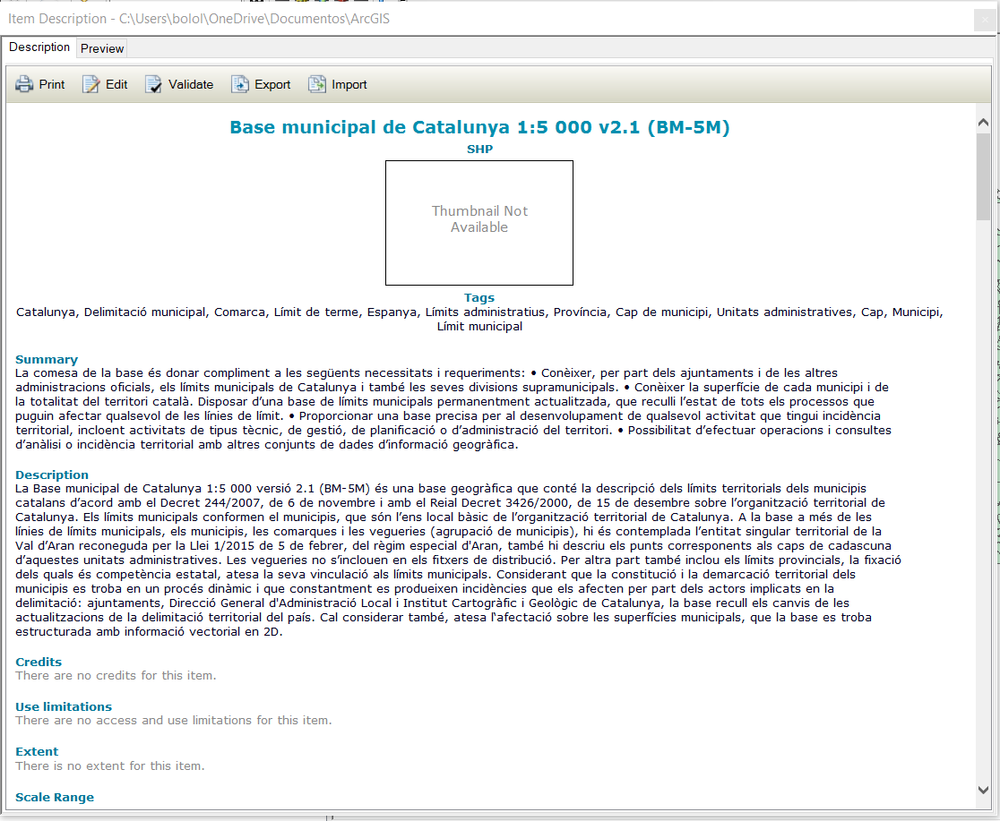
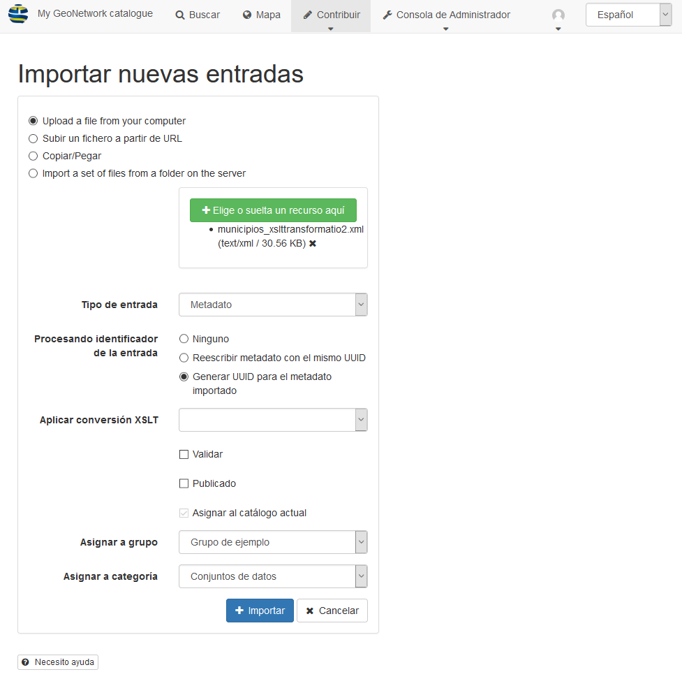

Creación de metadatos
Creación de metadatos desde ArcGIS
Como ya se ha comentado anteriormente la creación de metadatos de forma manual es un proceso complejo y largo por lo que la mejor forma de crearlos es mediante algún editor de metadatados.
En este caso utilizaremos el editor de metadatos que tiene integrado ArcGIS para generar un metadato mediante un ejemplo de un conjunto de datos de los límites municipales de Catalunya.
Elegir un estilo de metadatos
La información disponible para ver y editar en la pestaña Descripción está determinada por el estilo de metadatos seleccionado. 1
Abra el cuadro de diálogo Opciones para la aplicación ArcGIS for Desktop.
- En ArcMap, haga clic en Personalizar > Opciones de ArcMap.
- En ArcCatalog, haga clic en Personalizar > Opciones de ArcCatalog.
Haga clic en la pestaña Metadatos.
En el desplegable seleccionar el estilo de metadato que se desea crear en este caso INSPIRE Metadata Directive
Descargar la capa de información y el metadato correspondiete.
Ir a la web de la Infraestructura de Dades Espacials de Catalunya (IDEC)
En el catálogo de metadatos buscar limits
Seleccionar el primer resultado Base municipal de Catalunya 1:5 000 v2.1 (BM-5M)
Resultado de búsqueda
Al seleccionar el metadato nos abre una página con el detalle del metadato.
Para descagar los datos ir al apartado de Descàrregues i enllaços del metadato y presionar el botón de Obrir enllaç que aparece junto a Descàrrega SHP
Para descagar el metadato ir al apartade de Informació de la metadada y presionar el enlace Descarregar metadata
Cargar la capa en ArcGis e importar el metadato
Cargar la capa
Dentro del archivo (zip) de datos descargado hay varios shapefile. Seleccionaremos el archivo llamado bm5mv21sh0tpm1_20200601_0.shp
Cargarmos el shapefile dentro de nuestra geodatabase podemos llamarla municipios (tambien se puede cargar el shapefile directamente). Y luego cargamos la capa en el mapa.
Una vez cargada la capa de municipios en el mapa presionamos con el botón derecho sobre la capa y vamos a Data > View Item Description.... Esto nos abre una ventana nueva con el metadato de la capa.
 Ver metadato de la capa
Ver metadato de la capa
Podemos ver que en el metadato ya hay algunos datos extraidos automaticamente de la información de la capa, pero vemos que faltan muchos otros datos.
Si presionamos el botón de editar nos muestra el formulario de edición del metadato y nos indica todos los campos que faltan por rellenar para cumplir con el estilo de metadato seleccionado.
Editor metadatos
Importar el metadato
Abrimos el ArcCatalog y buscamos la capa de municipios hacemos click con el botón derecho y seleccionamos Item Description.... Esto nos habre una nueva ventana donde podemos ver el metadato pero a diferencia de la ventana que se desplega al ver la descripcion de la capa directamente en el mapa nos muestra más opciónes no solo la de impresión y edición sino que tambíen podemos validar, exportar o importar el metadato.
Presionamos el botón de Importar y nos muestra el formulario de importación. En el campo de Source Metadata seleccionamos el archivo xml descargado de la IDEC. En el import type seleccionamos la opción FROM_ISO19139 y en el Target Metadata dejamos nuestra capa. Presionamos OK.
Una vez terminado el proceso podemos ver que se han rellenado muchos de los campos del metadato.
 Importar metadato
Completar la información que falta por rellenar
Overview
- Citation -> New Identifier -> Code = bm5mv21sh0tpm1_20200601_0
Metadata
- Datails -> Language = Spanish; Castilian
- Contacts -> Unitat de Delimitacó Territorial i de Grans Obres (Unknown) -> Role = Point of Contact
Resource
- Datails -> Language = Spanish; Castilian
- Points of Contacts -> Unitat de Delimitacó Territorial i de Grans Obres (Unknown) -> Role = Point of Contact
- Constraints -> Legal Constraints -> Access Connstraints = Licence
- Quality -> Scope Level = Dataset
- Distribution -> Distributor -> Unitat de Delimitacó Territorial i de Grans Obres (Unknown) -> Role = Point of Contact
-
Fields -> Details: municipios
- Entity Type -> Definition = Polígonos de límites municipales
- Entity Type -> Definition Source = ICGC
- Attribute:CODIMUNI -> Definition = Código INE municipal
- Attribute:CODIMUNI -> Definition Source = INE
- Attribute:CODIMUNI -> New Unrepresentable Domain = Cada registro tiene un código único
Ejercicio 1pt
Completar la información del resto de campos del metadato
Exportación desde ArcGIS e importación en GeoNetwork
Exportar el metadato
Abrimos el ArcCatalog y buscamos la capa de municipios hacemos click con el botón derecho y seleccionamos Item Description.... Esto nos habre una nueva ventana donde podemos ver el metadato y varias opciones.
Presionamos el botón de Export dejamos las opciones de Source Metadata y Translator que nos poner por defecto y seleccionamos el archivo de salida (opcional). Presionamos el botón de OK.
Una vez finalizado el proceso cerramos la ventana desplegada por el proceso de exportación y la ventana del metadato.
Importación en GeoNetwork
Abrimos en nuetro navegador el GeoNetwork http://localhost:8080/geonetwork.
Nos identificamos como administrador en el GeoNetwork
En el menú de Contribuir seleccionar la opción de Importar nuevas entradas. Nos muestra un formulario que rellenaremos con los siguientes valores:
- Seleccionar Upload a file from your computer y seleccionar el archivo exportado desde ArcGIS.
- Tipo de Entrada seleccionar Metadato
- Procesando identificador de la entrada seleccionar Generar UUID para el metadato importado
- Asignar a categoría seleccionar Conjunto de datos
- Presionar el botón de Importar
 Importar metadato GeoNetwork
En el menú seleccionamos la opción de Buscar y vemos que nos aparece nuestro metadato.
Agregar la imagen de la vista previa
Presionamos el botón de editar que aparece en el metadato y nos muestra el formulario de edicón de metadatos.
En el apartado de Visión de Conjunto seleccionar una imagen descriptiva del conjuto de datos.
Nota
Esta imagen se puede generar desde el ArcGIS o con una captura de pantalla
Una vez cargada la imagen pesionar el botón de Guardar y cerrar
Volvemos a la pantalla de Buscar y vemos que ahora aparece la imagen en nuestro metadato.
 Metadato con imagen
Metadato con imagen